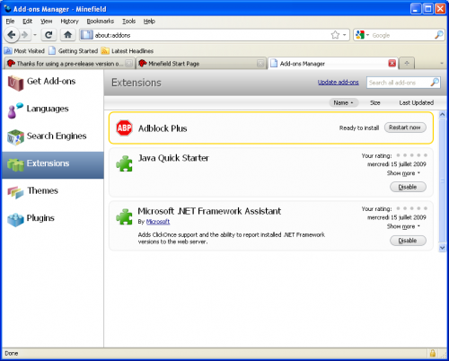

30 avril 2010
Le nouveau gestionnaire d'extensions de Firefox
Mozilla viens juste de rendre disponible une version d'essai de Firefox (3.7a5pre) avec un nouveau gestionnaire d'extensions.
Cette nouvelle version introduit donc une nouvelle page accessible via about:addons


Elle permet entre autres :- de naviguer parmi les extensions sur le site de Mozilla ;
- de télécharger/changer de langue ;
- installer et gérer ses moteurs de recherche ;
- installer des thèmes/extensions ;
- activer/désactiver des plugins ;
- et dans le futur installer des personas/jetpack.
Commentaires 3